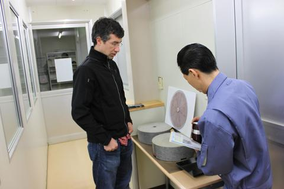

KIRISHIMA
KIRISHIMA, KAGOSHIMA, JAPAN
SWEET PEAS | CELERY
SHOT 4.5 / BOWL 9
TIN (30g) 35
Your daily shot.
TYPE: Certified Organic Matcha
GROWER: Hayashi Family
Shutaro and Kenji Hayashi are fifth generations tea farmers; they are not only exceptional tea growers but also stewards of the land. We were very impressed by their farming practices: bees and spiders to control pests, and goats and geese to control weeds.
MATCHA #1.5
HOSHINO, YAME, JAPAN
SMOOTH | VERSATILE
SHOT 7/ BOWL 14
TIN (20g) 35
Balanced, introductory.
TYPE: ushucha (thin matcha)
GROWER: Yamaguchi Family
The Yamaguchi have 29 tea cultivars growing on the hills of Hoshino. Whereas Yame is a younger tea producing region that the highly acclaimed Uji, the terroir, availability of tea cultivars and attention to detail in the handcrafting process is yielding some of the best Japanese teas we’ve ever tried.
